规定初始像素覆盖已通过独立数据验收，完整12步与物理安全未通过。Prescribed initial pixel coverage passes the independent DATA audit; full12-step and physical acceptance remain incomplete. Original1280×720; no edits/crop. Every image below is INITIAL, not micro1/final.
{"seed": 0, "proposal_id": 2276, "global_id": 8420, "family": 0}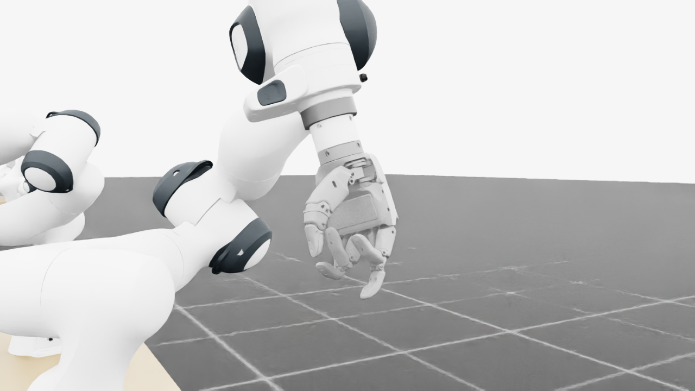
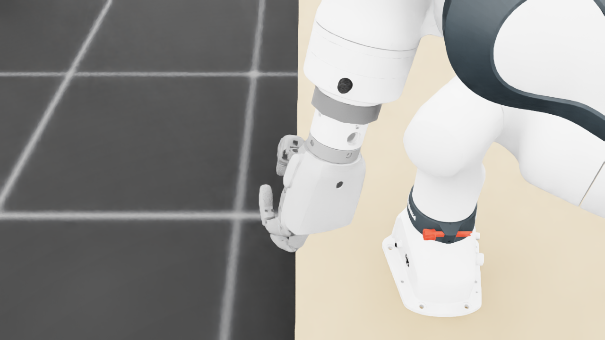
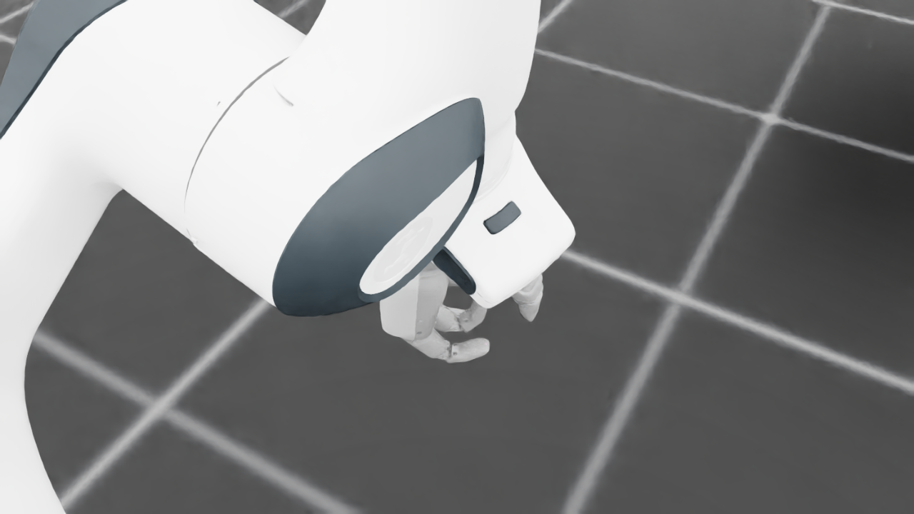
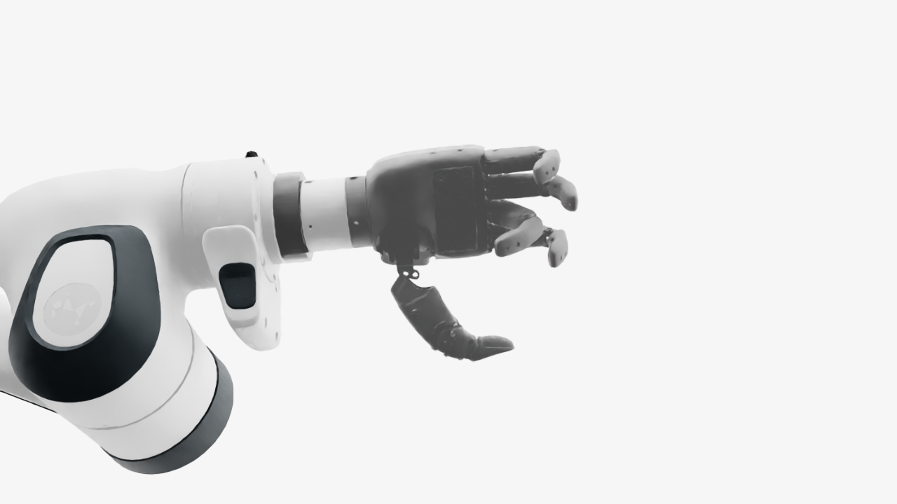
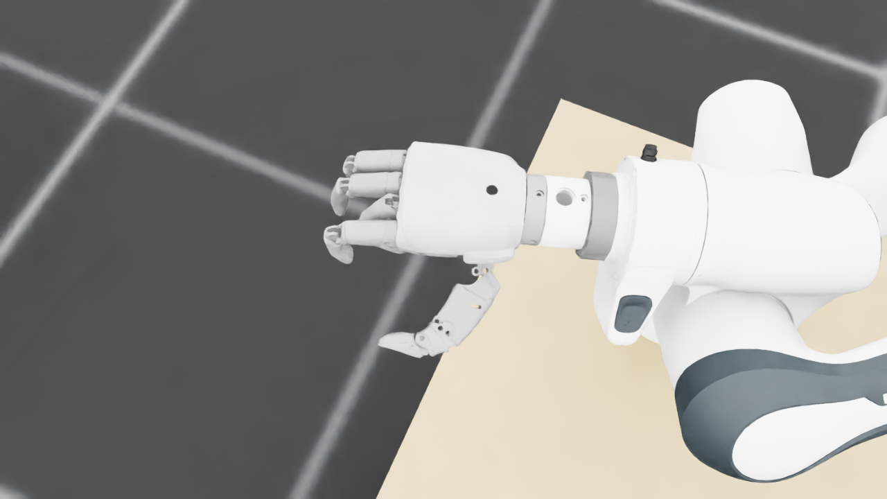
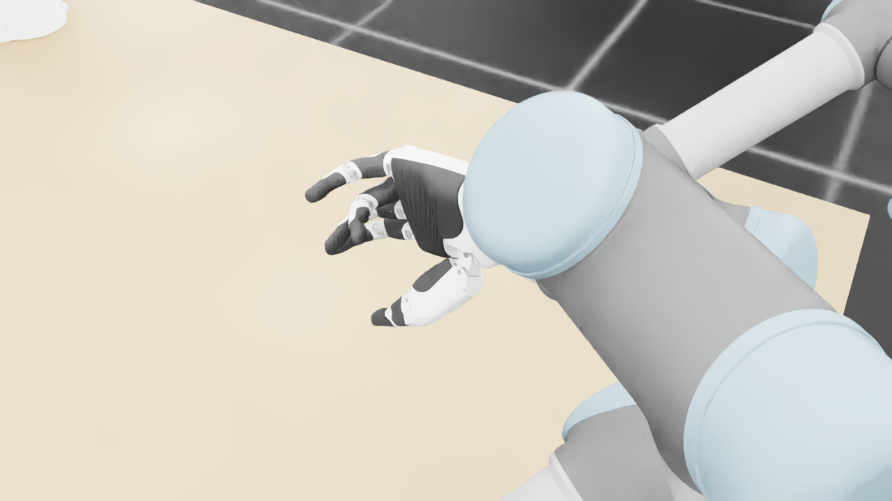
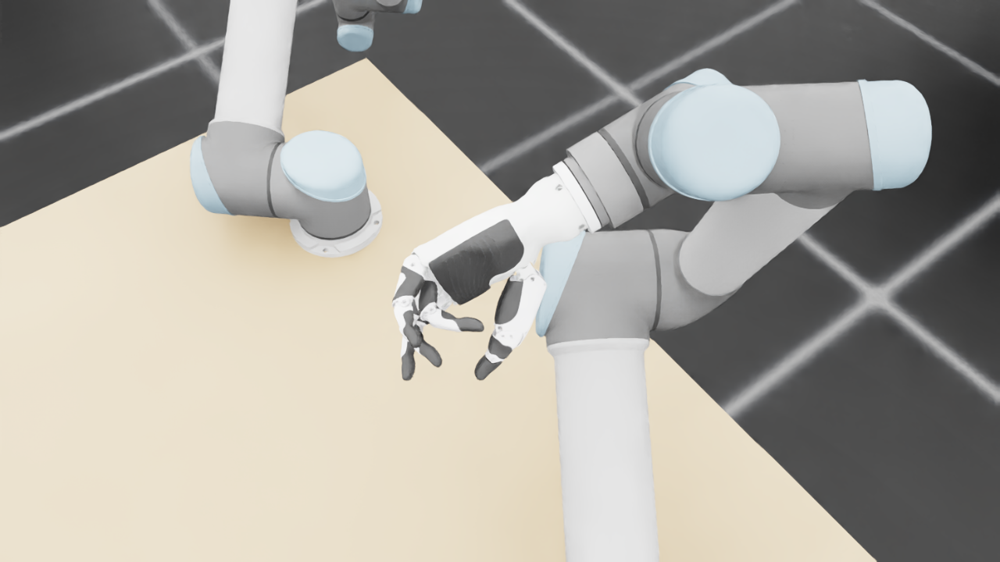
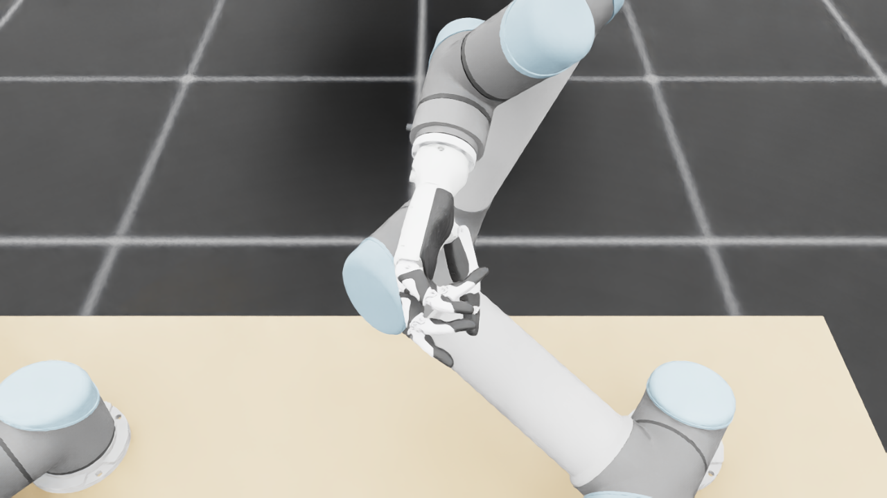
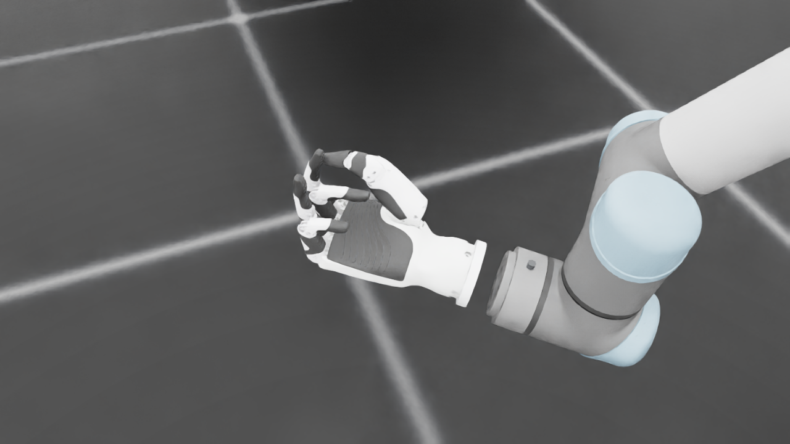
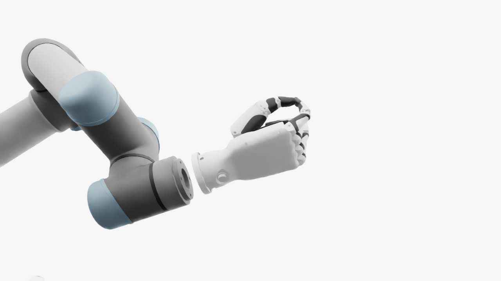
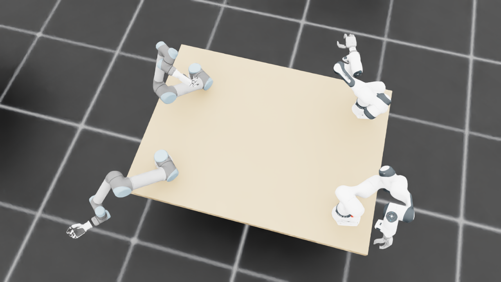
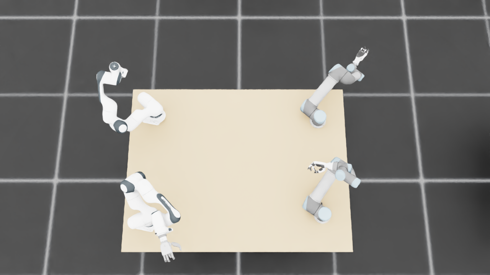
{
"qualified": true,
"arms": {
"F_L": {
"qualified": true,
"palm_visual_peak_pixels": 29118,
"finger_family_peak_pixels": {
"thumb": 7864,
"index": 3546,
"middle": 2026,
"ring": 2734,
"little": 2909
},
"per_native_body_peak_pixels": {
"/World/envs/env_1/F_L/f2_hand/left_hand_base": 35627,
"/World/envs/env_1/F_L/f2_hand/left_index_1": 1673,
"/World/envs/env_1/F_L/f2_hand/left_middle_1": 975,
"/World/envs/env_1/F_L/f2_hand/left_pinky_1": 1354,
"/World/envs/env_1/F_L/f2_hand/left_ring_1": 942,
"/World/envs/env_1/F_L/f2_hand/left_thumb_1": 526,
"/World/envs/env_1/F_L/f2_hand/left_index_2": 2137,
"/World/envs/env_1/F_L/f2_hand/left_middle_2": 1472,
"/World/envs/env_1/F_L/f2_hand/left_pinky_2": 1555,
"/World/envs/env_1/F_L/f2_hand/left_ring_2": 1931,
"/World/envs/env_1/F_L/f2_hand/left_thumb_2": 3912,
"/World/envs/env_1/F_L/f2_hand/left_thumb_3": 1841,
"/World/envs/env_1/F_L/f2_hand/left_thumb_4": 1585
},
"native_body_visibility_gaps": [],
"all_native_hand_bodies_observed": true,
"full_mesh_coverage_certified": false,
"all_recorded_attempt_peak": {
"qualified": false,
"palm_visual_peak_pixels": 29118,
"finger_family_peak_pixels": {
"thumb": 7864,
"index": 4100,
"middle": 3380,
"ring": 2734,
"little": 3428
},
"per_native_body_peak_pixels": {
"/World/envs/env_1/F_L/f2_hand/left_hand_base": 35627,
"/World/envs/env_1/F_L/f2_hand/left_index_1": 2436,
"/World/envs/env_1/F_L/f2_hand/left_middle_1": 2154,
"/World/envs/env_1/F_L/f2_hand/left_pinky_1": 2310,
"/World/envs/env_1/F_L/f2_hand/left_ring_1": 1074,
"/World/envs/env_1/F_L/f2_hand/left_thumb_1": 766,
"/World/envs/env_1/F_L/f2_hand/left_index_2": 2137,
"/World/envs/env_1/F_L/f2_hand/left_middle_2": 1657,
"/World/envs/env_1/F_L/f2_hand/left_pinky_2": 1555,
"/World/envs/env_1/F_L/f2_hand/left_ring_2": 1931,
"/World/envs/env_1/F_L/f2_hand/left_thumb_2": 3912,
"/World/envs/env_1/F_L/f2_hand/left_thumb_3": 1841,
"/World/envs/env_1/F_L/f2_hand/left_thumb_4": 1585
},
"native_body_visibility_gaps": [],
"all_native_hand_bodies_observed": true,
"full_mesh_coverage_certified": false,
"qualification": false
},
"attempts": 8,
"decoded": 8
},
"F_R": {
"qualified": true,
"palm_visual_peak_pixels": 31370,
"finger_family_peak_pixels": {
"thumb": 9849,
"index": 4390,
"middle": 4253,
"ring": 3930,
"little": 3946
},
"per_native_body_peak_pixels": {
"/World/envs/env_1/F_R/f2_hand/right_hand_base": 37949,
"/World/envs/env_1/F_R/f2_hand/right_index_1": 3021,
"/World/envs/env_1/F_R/f2_hand/right_middle_1": 1914,
"/World/envs/env_1/F_R/f2_hand/right_pinky_1": 2517,
"/World/envs/env_1/F_R/f2_hand/right_ring_1": 2570,
"/World/envs/env_1/F_R/f2_hand/right_thumb_1": 939,
"/World/envs/env_1/F_R/f2_hand/right_index_2": 1369,
"/World/envs/env_1/F_R/f2_hand/right_middle_2": 2339,
"/World/envs/env_1/F_R/f2_hand/right_pinky_2": 1429,
"/World/envs/env_1/F_R/f2_hand/right_ring_2": 1595,
"/World/envs/env_1/F_R/f2_hand/right_thumb_2": 5298,
"/World/envs/env_1/F_R/f2_hand/right_thumb_3": 1951,
"/World/envs/env_1/F_R/f2_hand/right_thumb_4": 1788
},
"native_body_visibility_gaps": [],
"all_native_hand_bodies_observed": true,
"full_mesh_coverage_certified": false,
"all_recorded_attempt_peak": {
"qualified": true,
"palm_visual_peak_pixels": 31370,
"finger_family_peak_pixels": {
"thumb": 9849,
"index": 4390,
"middle": 4253,
"ring": 3930,
"little": 4818
},
"per_native_body_peak_pixels": {
"/World/envs/env_1/F_R/f2_hand/right_hand_base": 37949,
"/World/envs/env_1/F_R/f2_hand/right_index_1": 3021,
"/World/envs/env_1/F_R/f2_hand/right_middle_1": 2108,
"/World/envs/env_1/F_R/f2_hand/right_pinky_1": 3100,
"/World/envs/env_1/F_R/f2_hand/right_ring_1": 2570,
"/World/envs/env_1/F_R/f2_hand/right_thumb_1": 951,
"/World/envs/env_1/F_R/f2_hand/right_index_2": 1541,
"/World/envs/env_1/F_R/f2_hand/right_middle_2": 2339,
"/World/envs/env_1/F_R/f2_hand/right_pinky_2": 1718,
"/World/envs/env_1/F_R/f2_hand/right_ring_2": 1595,
"/World/envs/env_1/F_R/f2_hand/right_thumb_2": 5298,
"/World/envs/env_1/F_R/f2_hand/right_thumb_3": 1951,
"/World/envs/env_1/F_R/f2_hand/right_thumb_4": 1788
},
"native_body_visibility_gaps": [],
"all_native_hand_bodies_observed": true,
"full_mesh_coverage_certified": false,
"qualification": false
},
"attempts": 4,
"decoded": 4
},
"U_L": {
"qualified": true,
"palm_visual_peak_pixels": 10039,
"finger_family_peak_pixels": {
"thumb": 9115,
"index": 2127,
"middle": 2743,
"ring": 3185,
"little": 3698
},
"per_native_body_peak_pixels": {
"/World/envs/env_1/U_L/wrist_3_link": 26151,
"/World/envs/env_1/U_L/left_index_1": 1288,
"/World/envs/env_1/U_L/left_little_1": 2059,
"/World/envs/env_1/U_L/left_middle_1": 1122,
"/World/envs/env_1/U_L/left_ring_1": 1632,
"/World/envs/env_1/U_L/left_thumb_1": 782,
"/World/envs/env_1/U_L/left_index_2": 1269,
"/World/envs/env_1/U_L/left_little_2": 1747,
"/World/envs/env_1/U_L/left_middle_2": 1621,
"/World/envs/env_1/U_L/left_ring_2": 1553,
"/World/envs/env_1/U_L/left_thumb_2": 6212,
"/World/envs/env_1/U_L/left_thumb_3": 1545,
"/World/envs/env_1/U_L/left_thumb_4": 647
},
"native_body_visibility_gaps": [],
"all_native_hand_bodies_observed": true,
"full_mesh_coverage_certified": false,
"all_recorded_attempt_peak": {
"qualified": false,
"palm_visual_peak_pixels": 14084,
"finger_family_peak_pixels": {
"thumb": 9538,
"index": 2895,
"middle": 2743,
"ring": 3185,
"little": 3698
},
"per_native_body_peak_pixels": {
"/World/envs/env_1/U_L/wrist_3_link": 41712,
"/World/envs/env_1/U_L/left_index_1": 1775,
"/World/envs/env_1/U_L/left_little_1": 2059,
"/World/envs/env_1/U_L/left_middle_1": 1565,
"/World/envs/env_1/U_L/left_ring_1": 1632,
"/World/envs/env_1/U_L/left_thumb_1": 782,
"/World/envs/env_1/U_L/left_index_2": 1319,
"/World/envs/env_1/U_L/left_little_2": 1747,
"/World/envs/env_1/U_L/left_middle_2": 1621,
"/World/envs/env_1/U_L/left_ring_2": 1602,
"/World/envs/env_1/U_L/left_thumb_2": 6212,
"/World/envs/env_1/U_L/left_thumb_3": 2367,
"/World/envs/env_1/U_L/left_thumb_4": 1355
},
"native_body_visibility_gaps": [],
"all_native_hand_bodies_observed": true,
"full_mesh_coverage_certified": false,
"qualification": false
},
"attempts": 8,
"decoded": 8
},
"U_R": {
"qualified": true,
"palm_visual_peak_pixels": 11728,
"finger_family_peak_pixels": {
"thumb": 8672,
"index": 3008,
"middle": 2995,
"ring": 1988,
"little": 3306
},
"per_native_body_peak_pixels": {
"/World/envs/env_1/U_R/wrist_3_link": 40157,
"/World/envs/env_1/U_R/right_index_1": 2130,
"/World/envs/env_1/U_R/right_little_1": 1672,
"/World/envs/env_1/U_R/right_middle_1": 1080,
"/World/envs/env_1/U_R/right_ring_1": 1035,
"/World/envs/env_1/U_R/right_thumb_1": 230,
"/World/envs/env_1/U_R/right_index_2": 1214,
"/World/envs/env_1/U_R/right_little_2": 1634,
"/World/envs/env_1/U_R/right_middle_2": 1915,
"/World/envs/env_1/U_R/right_ring_2": 1461,
"/World/envs/env_1/U_R/right_thumb_2": 5320,
"/World/envs/env_1/U_R/right_thumb_3": 2151,
"/World/envs/env_1/U_R/right_thumb_4": 1007
},
"native_body_visibility_gaps": [],
"all_native_hand_bodies_observed": true,
"full_mesh_coverage_certified": false,
"all_recorded_attempt_peak": {
"qualified": false,
"palm_visual_peak_pixels": 11728,
"finger_family_peak_pixels": {
"thumb": 12092,
"index": 5373,
"middle": 2995,
"ring": 1988,
"little": 3306
},
"per_native_body_peak_pixels": {
"/World/envs/env_1/U_R/wrist_3_link": 44668,
"/World/envs/env_1/U_R/right_index_1": 3359,
"/World/envs/env_1/U_R/right_little_1": 1672,
"/World/envs/env_1/U_R/right_middle_1": 1080,
"/World/envs/env_1/U_R/right_ring_1": 1035,
"/World/envs/env_1/U_R/right_thumb_1": 488,
"/World/envs/env_1/U_R/right_index_2": 2014,
"/World/envs/env_1/U_R/right_little_2": 1634,
"/World/envs/env_1/U_R/right_middle_2": 2192,
"/World/envs/env_1/U_R/right_ring_2": 1461,
"/World/envs/env_1/U_R/right_thumb_2": 7285,
"/World/envs/env_1/U_R/right_thumb_3": 2976,
"/World/envs/env_1/U_R/right_thumb_4": 1343
},
"native_body_visibility_gaps": [],
"all_native_hand_bodies_observed": true,
"full_mesh_coverage_certified": false,
"qualification": false
},
"attempts": 4,
"decoded": 4
}
},
"wide": {
"qualified": true,
"per_native_object_peak_pixels": {
"/World/envs/env_1/F_L/fr3_link0": 1921,
"/World/envs/env_1/F_L/fr3_link1": 2425,
"/World/envs/env_1/F_L/fr3_link2": 3536,
"/World/envs/env_1/F_L/fr3_link3": 1390,
"/World/envs/env_1/F_L/fr3_link4": 2267,
"/World/envs/env_1/F_L/fr3_link5": 4163,
"/World/envs/env_1/F_L/fr3_link6": 2521,
"/World/envs/env_1/F_L/fr3_link7": 801,
"/World/envs/env_1/F_L/fr3_link8": 3,
"/World/envs/env_1/F_L/f2_hand/left_hand_base": 488,
"/World/envs/env_1/F_L/f2_hand/left_index_1": 77,
"/World/envs/env_1/F_L/f2_hand/left_middle_1": 19,
"/World/envs/env_1/F_L/f2_hand/left_pinky_1": 10,
"/World/envs/env_1/F_L/f2_hand/left_ring_1": 16,
"/World/envs/env_1/F_L/f2_hand/left_thumb_1": 28,
"/World/envs/env_1/F_L/f2_hand/left_index_2": 61,
"/World/envs/env_1/F_L/f2_hand/left_middle_2": 31,
"/World/envs/env_1/F_L/f2_hand/left_pinky_2": 1,
"/World/envs/env_1/F_L/f2_hand/left_ring_2": 6,
"/World/envs/env_1/F_L/f2_hand/left_thumb_2": 219,
"/World/envs/env_1/F_L/f2_hand/left_thumb_3": 46,
"/World/envs/env_1/F_L/f2_hand/left_thumb_4": 23,
"/World/envs/env_1/F_R/fr3_link0": 1079,
"/World/envs/env_1/F_R/fr3_link1": 1513,
"/World/envs/env_1/F_R/fr3_link2": 2520,
"/World/envs/env_1/F_R/fr3_link3": 1295,
"/World/envs/env_1/F_R/fr3_link4": 3042,
"/World/envs/env_1/F_R/fr3_link5": 3595,
"/World/envs/env_1/F_R/fr3_link6": 1438,
"/World/envs/env_1/F_R/fr3_link7": 827,
"/World/envs/env_1/F_R/fr3_link8": 148,
"/World/envs/env_1/F_R/f2_hand/right_hand_base": 1169,
"/World/envs/env_1/F_R/f2_hand/right_index_1": 89,
"/World/envs/env_1/F_R/f2_hand/right_middle_1": 59,
"/World/envs/env_1/F_R/f2_hand/right_pinky_1": 85,
"/World/envs/env_1/F_R/f2_hand/right_ring_1": 88,
"/World/envs/env_1/F_R/f2_hand/right_thumb_1": 10,
"/World/envs/env_1/F_R/f2_hand/right_index_2": 35,
"/World/envs/env_1/F_R/f2_hand/right_middle_2": 6,
"/World/envs/env_1/F_R/f2_hand/right_pinky_2": 26,
"/World/envs/env_1/F_R/f2_hand/right_ring_2": 35,
"/World/envs/env_1/F_R/f2_hand/right_thumb_2": 162,
"/World/envs/env_1/F_R/f2_hand/right_thumb_3": 64,
"/World/envs/env_1/F_R/f2_hand/right_thumb_4": 51,
"/World/envs/env_1/U_L/base_link": 241,
"/World/envs/env_1/U_L/shoulder_link": 1361,
"/World/envs/env_1/U_L/upper_arm_link": 4794,
"/World/envs/env_1/U_L/forearm_link": 2260,
"/World/envs/env_1/U_L/wrist_1_link": 1158,
"/World/envs/env_1/U_L/wrist_2_link": 831,
"/World/envs/env_1/U_L/wrist_3_link": 1176,
"/World/envs/env_1/U_L/left_index_1": 39,
"/World/envs/env_1/U_L/left_little_1": 86,
"/World/envs/env_1/U_L/left_middle_1": 58,
"/World/envs/env_1/U_L/left_ring_1": 39,
"/World/envs/env_1/U_L/left_thumb_1": 10,
"/World/envs/env_1/U_L/left_index_2": 50,
"/World/envs/env_1/U_L/left_little_2": 48,
"/World/envs/env_1/U_L/left_middle_2": 37,
"/World/envs/env_1/U_L/left_ring_2": 59,
"/World/envs/env_1/U_L/left_thumb_2": 151,
"/World/envs/env_1/U_L/left_thumb_3": 52,
"/World/envs/env_1/U_L/left_thumb_4": 18,
"/World/envs/env_1/U_R/base_link": 320,
"/World/envs/env_1/U_R/shoulder_link": 1389,
"/World/envs/env_1/U_R/upper_arm_link": 7048,
"/World/envs/env_1/U_R/forearm_link": 2599,
"/World/envs/env_1/U_R/wrist_1_link": 821,
"/World/envs/env_1/U_R/wrist_2_link": 442,
"/World/envs/env_1/U_R/wrist_3_link": 1239,
"/World/envs/env_1/U_R/right_index_1": 36,
"/World/envs/env_1/U_R/right_little_1": 38,
"/World/envs/env_1/U_R/right_middle_1": 38,
"/World/envs/env_1/U_R/right_ring_1": 32,
"/World/envs/env_1/U_R/right_thumb_1": 4,
"/World/envs/env_1/U_R/right_index_2": 35,
"/World/envs/env_1/U_R/right_little_2": 53,
"/World/envs/env_1/U_R/right_middle_2": 68,
"/World/envs/env_1/U_R/right_ring_2": 34,
"/World/envs/env_1/U_R/right_thumb_2": 177,
"/World/envs/env_1/U_R/right_thumb_3": 74,
"/World/envs/env_1/U_R/right_thumb_4": 40,
"/World/envs/env_1/TableF": 114183,
"/World/envs/env_1/TableU": 109363
},
"arm_peak_pixels": {
"F_L": 19950,
"F_R": 16379,
"U_L": 11637,
"U_R": 14154
},
"table_peak_pixels": {
"TableF": 114183,
"TableU": 109363
},
"critical_body_peak_pixels": {
"/World/envs/env_1/U_L/forearm_link": 2260,
"/World/envs/env_1/U_L/wrist_2_link": 831,
"/World/envs/env_1/U_R/forearm_link": 2599,
"/World/envs/env_1/U_R/wrist_2_link": 442
}
},
"raw_attempt_count": 36,
"PNG_count": 36,
"angle_records": 36,
"max_actual_angle_identity_error_deg": 0.0,
"held_snapshot_checks": 532,
"universal_visibility_impossible": false,
"full_mesh_coverage_certified": false
}